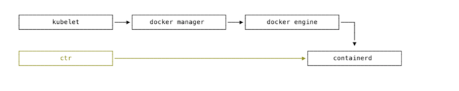

什么是 k3s？
k3s 是微型的 kubernetes 发行版本
- CNCF 认证的 Kubernetes 发行版
- 50MB 左右二进制包，500MB 左右内存消耗
- 单一进程包含 Kubernetes master, Kubelet, 和 containerd
- 支持 SQLite/Mysql/PostgreSQL/DQlite 和 etcd
- 同时为 x86_64, Arm64, 和 Armv7 平台发布
k3s 基本架构
整体架构
部署架构

轻量化
相比 k8s 移除
- 删除旧的和非必要的组件
- alpha feature
- In-tree cloud providers
- In-tree storage strivers
- Docker (optional)
增加
- 简单的安装
- etcd 默认使用 SQLite 做数据源
- TLS 管理
- 自动 helm chart 管理
- containerd、cordons、Flannel 集成
k3s 代码结构
注意事项：
- contaienrd 是独立进程，也可以使用 docker
- Tunnel Proxy 负责维护 k3s server 和 k3s agent 之间的链接，采用 Basic Auth 的方 式来进行认证
Demo
k3s 进程
- server
# 6443 k3s server, 6444 api-server
- agent
pstree -p -aT $pid
ps -T $pid
参考链接
k3s 的高可用架构


高可用 - 外置数据库
- PostgreSQL (v10.7、v11.5) ü
- MySQL (v5.7)
- etcd (v3.3.15)
实现方式： rancher/kine
高可用 - 分布数据库
SQLite
- 软件库，无独立进程:C 语言编写
- 零管理配置:不需要服务管理进程
- 事务安全:兼容 ACID，可并发访问
- 标准 SQL 支持
- 单一磁盘文件
k3s 默认使用 /var/lib/rancher/k3s/server/db/state.db
Dqlite
- 软件库，无独立进程:C 语言编写
- 分布式一致:C-Raft 实现
- 兼容 SQLite
Dqlite 原理
- 一个 k3sserver 进程内含 SQL 的 client 组 件和 server 组件
- client 仅连接一个 server
- server 链接 SQLite 软件库
- 奇数个 k3sserver 进程
- client 需连接所有 server
- server 链接 Dqlite 软件库
- server 通过 C-Raft 来选主
- client 发现 主 server
- client 把请求都发送到主 server
- 主 server 通过 C-Raft 给从 server 发送差分日志作为数据同步

参考链接
Containerd
Containerd的设计目的是嵌入更大的系统
Docker 的历史
- 1.8 之前:docker -d - 2015 年，OCI 成立
- 1.8 - 1.11:docker daemon - runtime-spec 制定
- 1.11 以后:docker、dockerd - libcontainer -> runC
- dockerd = docker engine + containerd + containerd-shim + runC



操作
| 镜像操作 | Docker | ContainerD | | :------------- | :------------- | :----------------- | --------------------- | | 本地镜像列表 | docker images | crictl images | ctr images list | | 下载镜像 | docker pull | crictl pull | ctr (images) pull | | 上传镜像 | docker push | | ctr (images) push | | 删除本地镜像 | docker rmi | crictl rmi | ctr images remove | | 标记本地镜像 | docker tag | | ctr (images) tag | | 镜像详情 | docker inspect | crictl inspecti | | 容器列表 | docker ps | crictl ps | ctr containers list | | 创建容器 | docker create | crictl create | ctr containers create | | 运行容器 | docker start | crictl start | ctr (tasks) start | | 停止容器 | docker stop | crictl stop | ctr (tasks) pause | | 删除容器 | docker rm | crictl rm | ctr (tasks) rm | | 容器详情 | docker inspect | crictl inspect | | 连接容器 | docker attach | crictl attach | ctr (tasks) attach | | 容器内操作 | docker exec | crictl exec | ctr (tasks) exec | | 容器日志 | docker logs | crictl logs | | 容器状态 | docker stats | crictl stats | | 显示 POD 列表 | | crictl pods | | 查看 POD 详情 | | crictl inspectp | | 运行 POD | | crictl runp | | 停止 POD | | crictl stopp | | 删除 POD | | crictl rmp | | 转发端口到 POD | | crictl port-foward |
k3s 内置 containerd
- ctr : 单纯的容器管理
- crictl : 从 Kubernetes 视角出发，对 POD、容器进行管理
k3s 修改 containerd 配置修
改/var/lib/rancher/k3s/agent/etc/containerd/config.toml同目录
下config.toml.tmpl文件，重启 k3s
contaienrd 日志 /var/lib/rancher/k3s/agent/containerd/containerd.log
参考链接
k3s 拓展功能概览
Helm Controller
-
k3s Helm Controller 同时支持 v2 与 v3 版本
- 从 v1.17.0+k3s1 or above 默认使用 helm_v3
-
Helm v2 vs Helm v3
- 移除了 Tiller(from SA to kubeconfig)
- 三方会谈 (Three-way Strategic merge patch)
- 使用 Secret 作为默认存储
- crd-install hook 迁移到了 crds/路径等...
-
Helm Controller 的优势
- 更方便的用户体验
- HelmChart CRD 可以支持更丰富的拓展
设计原理
- Helm-controller 运行在 master 节点并 list/watch HelmChart CRD 对象
- CRD onChange 时执行 Job 更新
- Job Container 使用 rancher/kilipper-helm 为 entrypoint
- Killper-helm 内置 helm cli，可以安装/升级/删除对应的 chart
apiVersion: helm.cattle.io/v1
kind: HelmChart
metadata:
name: traefik
namespace: kube-system
spec:
chart: stable/traefik
set:
rbac.enabled: 'true'
ssl.enabled: 'true'
- K3s 会自动部署在/var/lib/rancher/k3s/server/manifests 路径下的 HelmChart
- 通过 HelmChart CRD 部署的 chart 是兼容 helm v3 CLI 的
- 在 k3s 中管理和部署 Helm 应用
相关工具包 - rancher/helm-controller - rancher/kilipper-helm
Traefik LB
K3s 支持模块化的开启或关闭相关组件，例如 Traefik LB, Scheduler, servicelb 等
- curl -sfL https://get.k3s.io | sh -s - server --no-deploy=traefik
- k3s server --no-deploy=traefik --no-deploy=servicelb
- 也可通过修改 k3s.service 配置然后重启生效
Service LB Controller 设计原理
Service LB 是 Rancher 针对 k3s 集群而设计的一种 service loadbalancer controller，用户可通过将 Service 的 type 类似配置为 LoadBalancer 来使用。
- svc-controller watch 到 service 类型为 LoadBalancer 时，自动创建一个 Daemonset;
- 默认 Daemonset 会部署到每个节点，如果任意 Node 设定了 label svccontroller.k3s.cattle.io/enablelb=true, 则只在拥有这个 label 的 node 上 创 建 DS 的 pod;
- 对于某个部署的节点，一个 LB port 只会对应一个 POD， 端口不能重复使 用;
- 若创建失败或无可用端口时，service 的状态为 Pending
本地存储
-
K3s 默认添加了 local path provisioner
-
Local path provisioner 是基于 Kubernetes Local Persistent Volume 功能实现的一 个本地动态存储管理器
- 默认 host path 路径为/var/lib/rancher/k3s/storage
- 配置文件存放在 kube-system 下的 local-path-config configmap
- 支持动态创建 host path volumes
- 不支持 capacity limit
k3s 与 GPU 结合使用
从 AI 视角看计算的三个层次
云计算:
- 最通用的计算
- 算力要求高，实时性要求低
- 执行复杂的认知计算和模型训练通用操作系统/海量 GPU 卡
边缘计算
- 连接云和端，针对端做特定 优化
- 执行推理和数据融合处理通用操作系统/数量有限的 GPU 卡/专业 AI 芯片
端计算
- 场景相关性强
- 极致效率，实时性要求高
- 主要面向推理实时操作系统/专业 AI 芯片
Kuberntes 正成为机器学习的主流基础设施平台
k3s 的优势
- K3s 足够轻量，减小边缘基础设施服务的资源占用
- K3s 部署运维足够简单，用户可以专注 GPU 和计算框架的管理
Docker 容器中的 GPU
k3s 使用 GPU 设备的原理
- 操作系统安装支持 Nvidia Driver
- 安装容器运行时，并切换 runtime 到 nvidia
- K8s 通过 gpu-device-plugin 来获取 GPU 资源并记录在 k8s 中
- Pod 通过在 k8s 内申请 gpu 资源，kubelet 驱 动 runtime 把一定额度的 GPU 卡分配 给它
resources:
limits:
nvidia.com/gpu: '1'
Demo 演示 GPU
- 准备 GPU 主机，安装 cuda-drivers
- 安装 nvidia-docker2
- 安装 k3s
- 安装 gpu-device-plugin
- 测试 GPU workload
当前的问题和展望
容器中对 GPU 的资源分配还不太灵活
- GPU 资源分配只能整数增减(可通过 Tensorflow 间接细化显存资源分配)
- NVIDIA docker 不支持 vGPU(kubevirt 虚拟化方式可支持)
AI 场景:云边文件传输的痛点
- 边缘 AI 训练特点:海量小文件 IO 性能要求
- 与云端同步数据的网络带宽消耗(断点续传)
K3s 的 IoT 场景管理
什么是边缘计算?
边缘计算是指在靠近智能设备或数据源头的一端，提供网络、
存储、计算、应用等能力，达到更快的网络服务响应，更安 全的本地数据传输。
边缘场景的 k8s 用例正在不断涌现
- 1106 个有效问卷
- 15%的受访者表示，正在把 Kubernetes 应用在边缘计算场景中
- Chick-fil-A Link
边缘计算的问题与挑战
-
边缘设备种类繁多
-
繁琐的版本管理
-
复杂的跨域环境
-
成百上千部署在边缘侧的应用
-
统一和可持续化迭代的管理 平台
-
继承了强大的 k8s 社区和生 态
-
边缘节点独立自制，云端系统统一管理
k3s 云边协作模式

k3s 案例

K3s 与 IoT 设备管理

- 创建并纳管边缘 k3s 集群
- 部署 MQTT Broker 到 k3s 集群
- 创建、部署 IoT 设备相关的应用
- 基于 MQTT 实现设备联动
K3S 周边介绍
实例化 k3s 集群的工具
- K3sup(https://github.com/alexellis/k3sup) - VM 实例中运行 k3s
- 具备隔离型，但依赖公有云服务
- K3s-ansible(https://github.com/itwars/k3s-ansible)
- 依赖用户对机器环境访问权限
- 依赖 ansible
- Multipass-k3s
- 依托 multipass 本身对虚拟机的管理
K3d - 依托 Docker 的 k3s 管理工具
- K3s 本身被置于容器中
- 容器中类似是 Docker-in-Docker 原理(https://hub.docker.com/_/docker)
- 实际是 k3s(containerd)-in-Docker
- K3d 整合各种 use cases，方便通过 CLI 创建 k3s 集群
K3d 带来的好处
- 管理容器一样管理 k3s 集群
- 给每个开发者本地 k3s 环境，方便调试应用
- https://github.com/rancher/k3d/tree/master/docs
不可变基础设施
Immutable Infrastructure

VM 实现了早期的构想
- VM 镜像过于笨重，且无法做版本控制
- 对异构环境不友好
- 用户习惯无法被约束，依然会在线进行部分更新操作
不可变基础设施 1.0 --- 容器技术(Docker)
- 解决环境间差异问题
- 快速回滚到老版本
- 更好的进行 CI
- 更好的自动化
- 更容易进行大规模运维

不可变基础设施 2.0 -- Immutable OS
硬件之上全部为 “不可变”
更复杂更高级的云原生应用的更新，不仅仅依赖 RootFS 变更，更需要内核的同步更新。
操作系统也应成为不可变基础设施的一部分，保证基础架构更高的一致性和可靠性，以及更 加方便运维管理。

Docker native 正在向 Kubernetes native 演变
Immutable OS 也紧跟趋势
Immutable OS for Docker:
- RancherOS
- Atomic
- CoreOS
- Photon OS
Immutable OS for Kubernetes:
- K3os
- Bottlerocket-os
- Talos
K3os – An Immutable OS For App
system-upgrade-controller
- 使用 Kubernets 方式管理 OS 升降级
- 未来会集成在 Rancher2.x 中
k3c - Classic Docker for a Kubernetes world
与 Docker 比
- 相似的交互
- singlebinary
- 同样内置 containerd 4. 更加轻量化
与 Crictl 比
- 满足 CRI 规范
- 支持 image tag/push
- 支持 image build